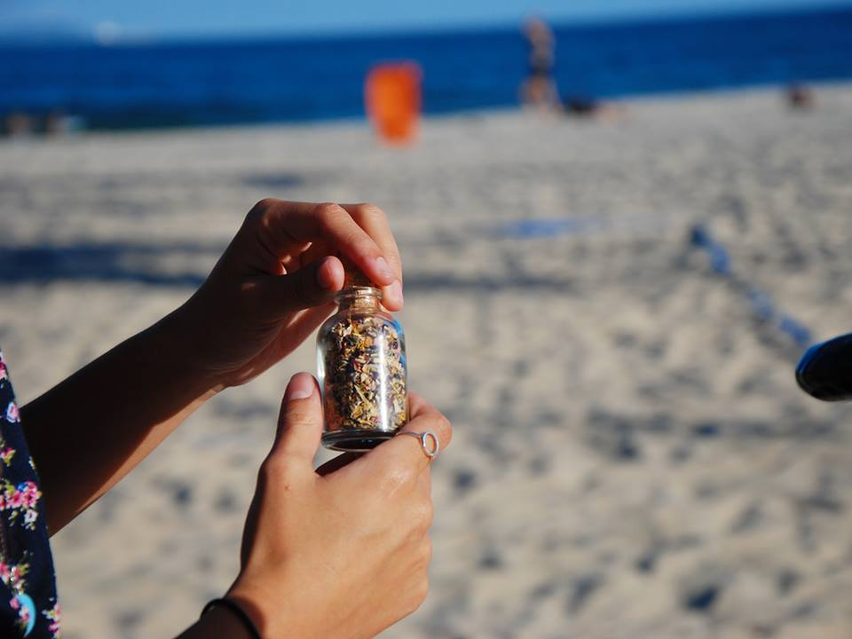
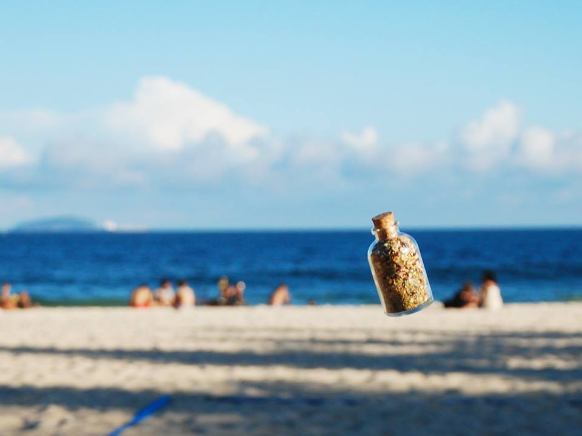

Vem cá fumar flor!
Dichava? Sim, dichava. Um blend de flores totalmente natural, artesanal e vegano. Leva calêndula, camomila, pata de vaca, mix de rosas e lavanda. Todas as plantas possuem propriedades terapêuticas relaxantes e eficazes contra ansiedade e estresse. Você pode fumar puro, ou misturar. Pra pedir é só mandar uma mensagem para a gente, nós entregamos 😉

Esse negócio deixa doidão?
Vai abaixar minha pressão?
Calma, jovem. As plantas que compõem nosso blend possuem propriedades terapêuticas com efeitos calmantes, como é o caso da camomila. Alivia o estresse a ansiedade, e não contém nenhuma química (só camomila, pata de vaca, calêndula, mix de rosas e lavanda). Curtiu? Contate a gente e experimenta 🌿🌷

Sua embalagem vale muito pra a gente.
Você sempre pode reutilizar nossos vidrinhos de diversas formas, mas se preferir, no próximo pedido você pode fazer o refil e ainda ganhar 20% de desconto. É só entregar o vidrinho vazio e trocar por um novo. Assim você contribui com o meio ambiente e ainda economiza uma graninha!
Atenção, xovens. Quando esses cachinhos baterem à porta, é sinal de que suas flores chegaram! Faça seu pedido que nós entregamos em casa, em toda zona sul do Rio, sem custo, 0800, na faixa, e num prazo de 24 horas. “Eu não moro na zona sul, como faço?”. Nos encontramos no metrô, em algum ponto que seja tranquilo pra ti ou enviamos pelos correios.
Benefícios ao meio ambiente. Menos química. 100% biodegradável. É inodoro e inócuo. Dispensa cola. Queima devagar, desperdiça menos. Por esses motivos e outros, a aLeda foi eleita pela High Life Barcelona o melhor papel de enrolar do mundo. Não molha nem amassa, então o rolé está salvo - literalmente. É por isso que Dichavamos na celulose. Além disso, você vê exatamente o que está fumando: flores.